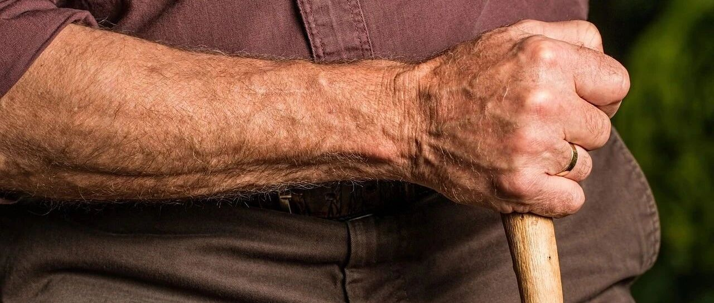

你都提前退休了，父母还咋养老？
点击关注 秋秋在分享
一起实现财务自由退休
大家好，我是秋秋呀！
我最近想开一个新专题：答疑。
把大家在评论、私信的内容整理下，也为FIRE（财务自由、提前退休）路上留点个人心得。
今天是：你都提前退休了，父母还咋养老呢？
指望不上你咯，秋秋真是不孝子啊！
NO。
其实我知道，问这个问题的，大概率是想说：你存的钱肯定不够负担你全家！
是的，我承认，我还真负担不了所有意外。
对自己是，对家里一切人也都是。
要不我就是神算子了。
我从来不求能应对100%，做好基础保障就行。
像父母，他们都有农村合作医疗和补充保险。
加起来一年2000多，可以保障基础的大病费用、意外赔偿。

老了他们还有居民养老保险，有存款，有房子，真到了大病那天，我们拿出钱也不成问题。
那你非说，50万也不够看病的！卖了房子也不够！保险赔完了还是要花很多钱！可能需要一辈子治疗！
无穷无尽…….
总把最苛刻的情况都往自己身上加？你这不是未雨绸缪，是专牛角尖。
万一咱们看文章的所有人的父母，都是活到100岁，睡一觉毫无痛苦就长眠的呢。
你都知道这是祝福的话了，就该知道极端的不幸和极端的幸运都是抛物线的两段，都不是大多数情况。
FIRE了，咱们考虑的应该是普遍大多数，根据这个来制定措施。
我们来参考一下专业数据，《中国大病网络众筹用户调研报告2024》总结了常见25种癌症平均治疗费用：

大概是10-50万。
而居民大病自付比例43%，以癌症为例，总费用为30万元，医保报销后个人需支付约12.9万元。
那父母两方，大病要准备25万左右。

居民养老是有国家补贴，以每年交6000元为例，个人账户总额9万多的情况下，一个月能领快1000。
居民养老金🟰各地区基础养老标准➕个人账户余额比。
山东🟰215➕95000/139🟰898
如果你是北京上海户口，基础养老金能有1000，再加上个人账户每个月领700左右。
一共2000左右，够吃喝花的。

如果养老=管吃喝+看病。咱们子女都负责。
按照平均数据，父母两个人就要准备12.9*2(大病)+9*2(养老保险)=43.8万。
我们的情况是:
父母在我俩工作后都还一直上班。
先不说年轻时候的积蓄，就是供完孩子读书后，每月赚两三千，在北京的时候能到五六千。
一方赚一方存，每年也能存下三万。
我们过年过节还会再给点。
按照这个，只算50到60岁存下的钱，即使父母没有退休金，也能有30万了。
我的父母没存款、没房子、也一直不工作？就不在咱们讨论范围内。
如果你的父母很过分，朋友，学会课题分离。
其实，大多数的父母都会主动的规划养老问题，而50多岁的父母还没啥钱，还有种情况就是给子女花了。
咱们多省点心，父母就有更多钱养老。
要不丁克咋不担心老了没钱花的问题呢，自己赚的自己花，肯定是够的。
说回前面，我自己没老，却可以换位思考，希望孩子怎么给我养老来回答这个问题。
我认为养老可以分为三个阶段：
1、陪伴
2、照料
3、赡养
以当下退休年龄55岁来算，在55岁-85岁的三十年：
1、陪伴（55-65岁）
这时候父母(我)身体健康，甚至还能参加劳动。像保安、保洁、保姆，55岁正是闯的时候。
有些工作你太年轻还做不了呢。
这一阶段，对我最好的就是陪伴。
多打打电话，不要因为他们听不懂就说「算了，不说了」
多带他们旅游，这个我还觉得自己很年轻，也想感受世界日新月异的变化呢！
如果是去医院，最好能亲自陪我。
年轻人也会搞不清楚各种挂号排队，医院各部门的路。
这个时候孝顺就不只是付钱，更是一种心理上的依赖。
我需要的“养老”，不是在病危了，孩子能掏出20万50万来延缓我几年的死亡。
而是在我还算健康的时候多陪伴，多和我聊天，日常的问候。
这一时期我也想感受活力。
2、照料（65岁-75岁）
我又老了一点，步履蹒跚，背也驼一点。
可能我会开始生病了，好在都是基础病，没有大碍，医生说要少吃那多吃这的，注意事项太多我都记不清楚。
这时候父母要的养老，是能多多照料一点。
注意事项有人记在心上。
洗澡的时候有人帮帮忙。
适合吃的东西，孩子能买给我。
这时候孩子工作不忙也挺好。
相比于真的生大病，儿女来看我的时间都没有，子孙绕膝，天伦之乐，照料就是这个时期最好的养老了。
3、赡养（75岁-85岁）
因人而异，这一时期可能真的需要金钱和时间意义上的养老了。
我的眼睛不行了，也快走不动路了，头脑一天天发沉。最近，我好像连儿子女儿都认不清了。
这个时候我才需要他们全职照顾我。
但其实也用不了几年，生了场大病，花了20多万看好了，可身体和精神的折磨也让我知道时日不多。
我却很知足，现在子女就在我身边，年轻的时候他们也很孝顺。我没有遗憾了。
树欲静而风不止，子欲养而亲不待。
相比于计算好几十万甚至几百万去给父母养老，这种养老才是我希望的。
陪伴，照料，最后才是赡养。
而不是嘴巴一张，在外面只跟别人比用多少钱能延缓父母几年的时间。
「提前退休」，也是有更多时间做到这三件事。
我们带父母去吃各种美食，可以在海边旅游南方过冬。


我们和他们一起讨论乒乓球和热点新闻，享受一家人的其乐融融。
陪他们做体检，按照医生建议照顾他们饮食，也会准备好兜底的钱。
这就是我「提前退休」给父母的养老方式，也分享给每一位计划FIRE的朋友。
下一期答疑:
住全季还叫财务自由？那大厂人人退休了！
期待一下子吧～我会把FIRE之路的拦路虎都和大家聊聊。